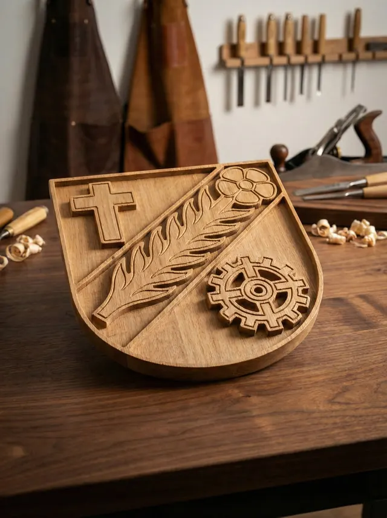
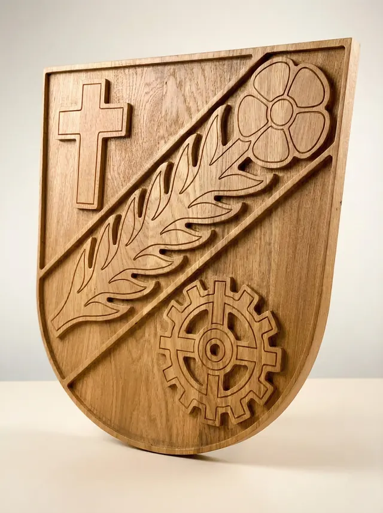
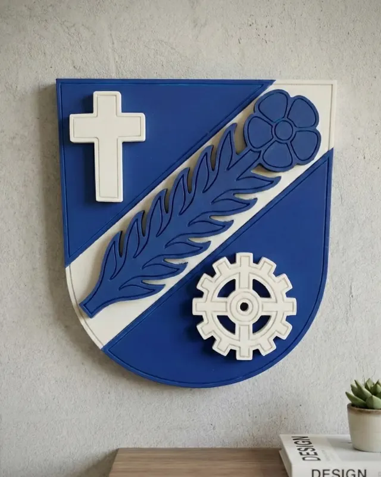
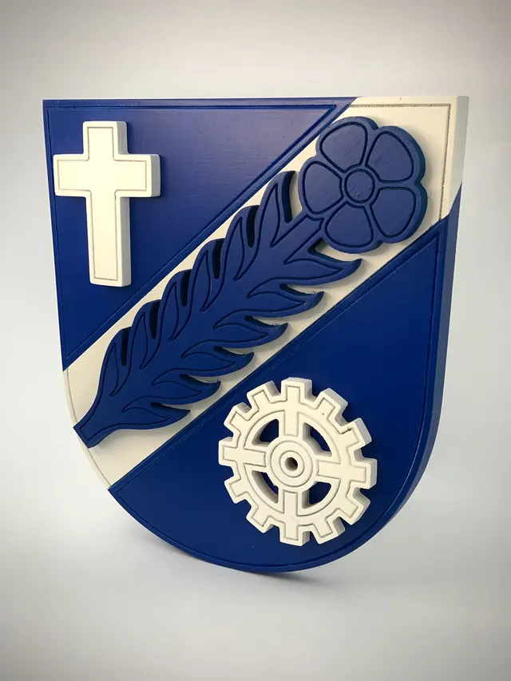
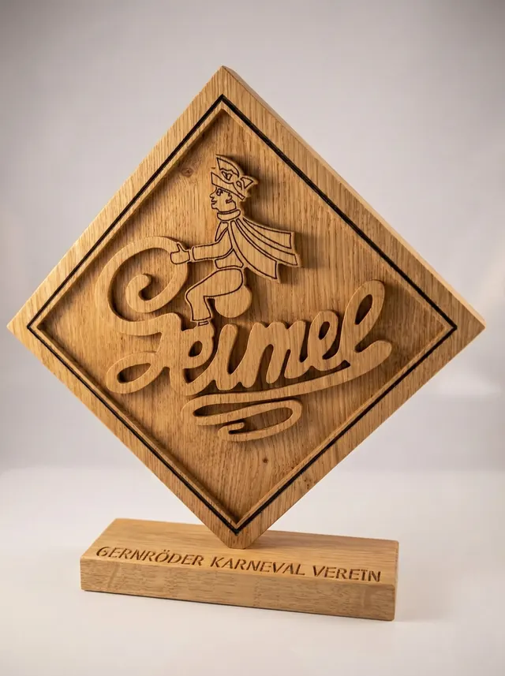
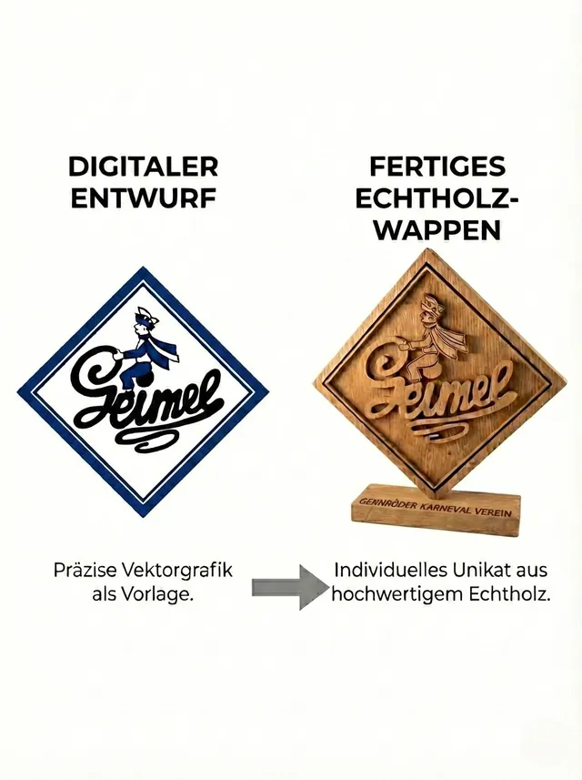
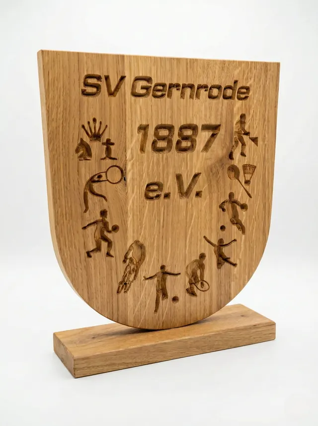
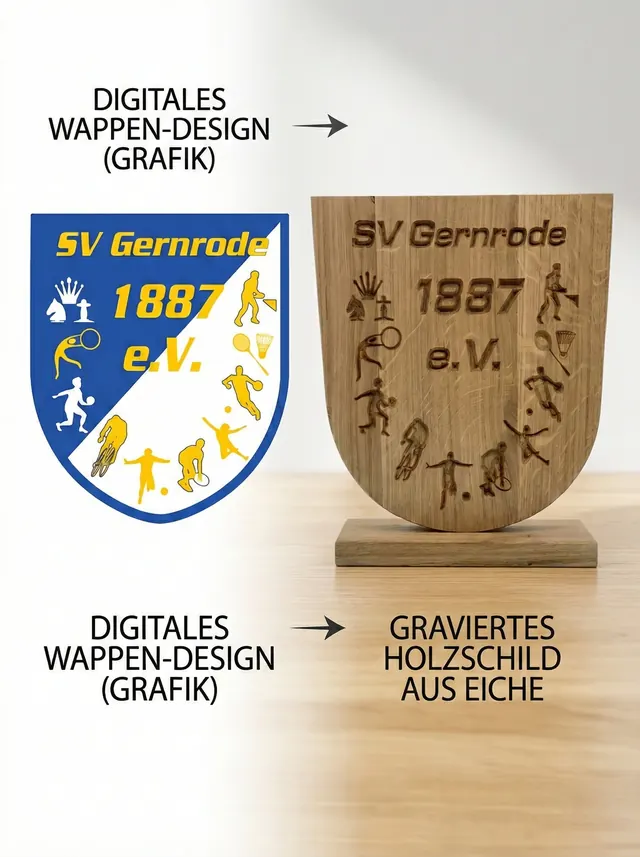

2.5D-Relief
Gemeindewappen natur
Offizielle Gemeindewappen mit Relief-Fräsung. Feine Details in massiver Eiche, veredelt mit Hartwachsöl – für Rathäuser und repräsentative Zwecke.
Für Rathaus, Vereinsheim oder als Ehrengeschenk, das nicht im Schrank verschwindet. Präzise gefräst, von Hand veredelt – auch in größerer Stückzahl.
Ein Vereinswappen an der Wand sagt mehr über eine Gemeinschaft aus als jede Urkunde. Deshalb setze ich Vereins-, Gemeinde- und Institutionswappen so um, dass sie auch aus zwei Metern Entfernung noch Eindruck machen: mit klaren Kanten, sauberen Ebenen und einer Oberfläche, die man anfassen will.
Ob als Geschenk zum Jubiläum, für den Sitzungssaal oder als Auszeichnung für verdiente Mitglieder – ich fertige einzeln oder in Serie, in derselben Qualität.
Vier typische Ausführungen – jede in einer anderen Technik.


2.5D-Relief
Offizielle Gemeindewappen mit Relief-Fräsung. Feine Details in massiver Eiche, veredelt mit Hartwachsöl – für Rathäuser und repräsentative Zwecke.


Originalfarben
Authentische Darstellung in den Originalfarben der Gemeinde. Mehrfach lackiert für brillante Farbgebung, mit eingelassener Wandaufhängung.


Pigmentiert
Detailgetreue Ausarbeitung des Vereinslogos als 2.5D-Relief. Kontrastreiche schwarze Pigmentierung hebt jedes Detail hervor.


Carve-Technik
Präzise Carve-Gravur mit spitz zulaufendem Fräser. Die variable Eintauchtiefe erzeugt plastische Wirkung – besonders schön bei Schriften.
ab 199 €
Je nach Größe und Detailgrad
auf Anfrage
Originalfarben oder Kontrastpigmentierung
Staffelpreis
Für Ehrungen und Jubiläen
Schick mir euer Logo oder Wappen – ich prüfe kostenlos, wie es sich in Holz umsetzen lässt, und nenne dir einen verbindlichen Preis.